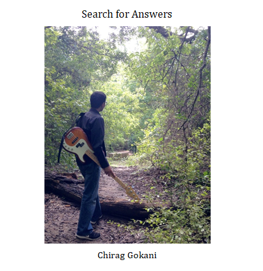
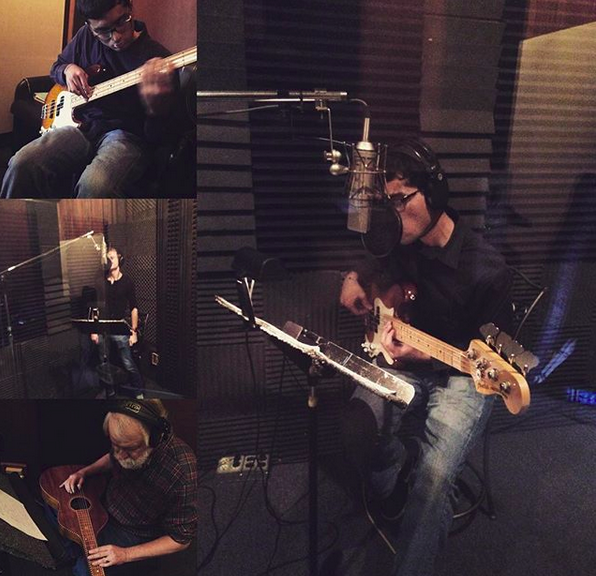

Sunset in Marfa, 2016
I am a second-year Eugene McDermott Scholar at the University of Texas at Dallas, where I am pursuing a B.S. in Physics.
My activities are largely governed by my passion for astronomy and music. As a member of the Society of Physics Students, I help coordinate public star parties and attend meetings and colloquia to discuss research. I have been mentored by Dr. Kaloyan Penev and Dr. Michael Kesden and currently conduct my own informal research. I am also an electric and upright bassist and have recently grown increasingly active in the Dallas music scene.
I am confident that some form of teaching will become central to my professional life. My service as a branch manager for IntelliChoice (a free math tutoring organization) and as an assistant for technology classes at the Richardson Public Library has led me to view teaching as an opportunity to impart the skills and values needed to succeed as a leader in an increasingly quantitative and automated world. I will continue to share the beauties of astronomy and music to ignite the curiosity, sense of awe, and capacity to wonder in my audiences.
You can read more about my recent activities on the McDermott Scholars' Blog.
I regularly perform with the Crosswinds Jazz Band, blues/world musician Stephen Houpt, the C3 Big Band and Addis, a jazz/fusion/world group. I have recently begun playing with Squirrelheads in Gravy, an old-time stringband. I also coordinate and lead jam sessions that follow the Helbing Jazz Initiative's monthly masterclasses.
| Location | Date | Time | With/About |
|---|---|---|---|
| Williamson Music 1st, 701 E Plano Pkwy #100 | Saturday, April 6th, 2019 | 11:30 a.m.-12:45 p.m. | Helbing Jazz Initiative Jam Session |
| The Prophet Bar | Sunday, March 24th, 2019 | TBA | Addis with Will Clark |
| The Wine Therapist | Saturday, March 23th, 2019 | 8:30-11:30 p.m. | Stephen Houpt, Marion Glorioso, Kevin Taylor & Mike Camerata |
| Williamson Music 1st, 701 E Plano Pkwy #100 | Saturday, March 2nd, 2019 | 11:30 a.m.-12:45 p.m. | Helbing Jazz Initiative Jam Session |
| Free Man Cajun Café | Sunday, February 24th, 2019 | 2:00-5:00 p.m. | Crosswinds Jazz Band |
| Z Grill & Tap | Wednesday, February 20th, 2019 | 7:00-10:00 p.m. | C3 Big Band |
| NTTDS Contra Dance @ First United Lutheran Church, 6202 E Mockingbird Ln | Saturday, February 16th, 2019 | 7:30-10:00 p.m. | Squirrelheads in Gravy (Joe Izen & Ray Quigley) |
| Williamson Music 1st, 701 E Plano Pkwy #100 | Saturday, February 2nd, 2019 | 11:30 a.m.-12:45 p.m. | Helbing Jazz Initiative Jam Session |
| The Wine Therapist (A Birthday Celebration) | Friday, January 18th, 2019 | 8:30-11:30 p.m. | Stephen Houpt, Marion Glorioso, Kevin Taylor & Martin McCall | Z Grill & Tap | Wednesday, January 16th, 2019 | 7:00-10:00 p.m. | C3 Big Band |
| Z Grill & Tap | Wednesday, December 5th, 2018 | 7:00-10:00 p.m. | Crosswinds Jazz Band |
| Austin Street Homeless Shelter | Thursday, November 29th, 2018 | 6:00-7:00 p.m. | St. Mark's Blues Club (community service) |
| St. Mark's Chapel (Upper School service) | Wednesday, November 28th, 2018 | 10:30-11:00 a.m. | Stephen Houpt |
| St. Mark's Chapel (Middle School service) | Tuesday, November 27th, 2018 | 10:30-11:00 a.m. | Stephen Houpt |
| Shebelle Ethiopian Cuisine & Bar | Saturday, November 17th, 2018 | 7:30-9:00 p.m. | Addis |
| The Wine Therapist | Friday, November 16th, 2018 | 8:30-11:30 p.m. | Stephen Houpt |
| University of Texas at Dallas (private event) | Sunday, November 11th, 2018 | 5:00 p.m. | Addis |
| Private event | Sunday, November 4th, 2018 | 7:00-9:00 p.m. | Mike Camerata, Jamie Ringholm |
| Global Village Market @ Greenland Hills United Methodist Church | Saturday, November 3rd, 2018 | 1:00-3:00 p.m. | Stephen Houpt & Michelle Stroescu |
| The Wine Therapist | Saturday, October 20th, 2018 | 8:30-11:30 p.m. | Stephen Houpt |
| Austin Street Homeless Shelter | Thursday, October 11th, 2018 | 6:00-7:00 p.m. | St. Mark's Blues Club (community service) |
| Oak Creek Tennis Center (private event) | Saturday, September 29th, 2018 | 3:00-4:00 p.m. | Crosswinds Jazz Band |
| The Wine Therapist | Friday, September 21st, 2018 | 8:30-11:30 p.m. | Stephen Houpt |
| The Wine Therapist | Friday, August 17th, 2018 | 8:30-11:30 p.m. | Stephen Houpt |
| Dallas Athletic Country Club | Tuesday, August 7th, 2018 | 10:00-11:00 a.m | Stephen Houpt & Michelle Stroescu |
| The Wine Therapist | Friday, June 22nd, 2018 | 8:30-11:30 p.m. | Stephen Houpt & Michelle Stroescu |
Tomorrow the mountains will be sleeping / Silent 'neath a blanket green and blue / All that I shall hear / The silence they are keeping / I'll bring all their promises to you.
-Townes Van Zandt, “Snowin’ on Raton”
I recorded this demo album at Paul Osborn's Audio Dallas Recording Studio in the fall and winter of 2018. I play electric bass on all the tracks and wrote all the arrangements. Tracks 5, 10, and 14 are original compositions.
1. It’s You I Like
by Fred Rogers
with Aaron Stone (trumpet), Brandon Bateman (alto), Khai Nguyen (piano), Colman Burks (drums), Mike Camerata (conga)
2. Autumn Longing
Music by Stephen Houpt; Words by 8th century Chinese poet Wang Wei
with Stephen Houpt (vocals)
3. Maiden Voyage
by Herbie Hancock
with Aaron Stone (flugelhorn), Brandon Bateman, Khai Nguyen, Colman Burks, Mike Camerata
4. Something
by George Harrison
with Isaac Byrd (piano), Colman Burks, Mike Camerata
5. Downtown Blues
with Christian Kondor (vocals), Stephen Houpt (harmonica)
6. Days of Wine and Roses
by Henry Mancini
with Khai Nguyen, Colman Burks, Mike Camerata
7. Sesame Street
by Toots Thielemans
with Aaron Stone, Brandon Bateman, Khai Nguyen, Mike Camerata, Colman Burks
8. Nearer, My God, to Thee
by Sarah Flower Adams
9. The Chicken
by Pee Wee Ellis
with Aaron Stone, Brandon Bateman, Khai Nguyen, Colman Burks, Mike Camerata
10. Searching
Stephen Houpt (Weissenborn steel guitar)
11. Playing With My Friends
by B.B. King & Robert Cray
with Will Clark (lead guitar & vocals), Collin Katz (rhythm guitar) Khai Nguyen, Aaron Stone, Brandon Bateman, Colman Burks
12. Parachutes
by Coldplay
with Christian Kondor (vocals)
13. Biji
by Sonny Rollins
with Aaron Stone, Isaac Byrd, Colman Burks, Mike Camerata
14. I’ll Be Through Them Hills and Gone
with Aaron Stone, Isaac Byrd, Colman Burks, Mike Camerata
Recording in Studio B at Audio Dallas. Thanks to Paul Osborn for the pictures.
~

Performing with the Crosswinds Jazz Band at Z Grill & Tap.

Listening to our tracks at Audio Dallas Recording Studio.

Playing with Steve Miller at St. Mark's, 2015.

My current project: numerically solving this underdetermined equation to explain how a lower Db is heard when the notes above are played.
I have recently begun handcrafting custom-tuned wind chimes to benefit the North Texas Food Bank.
"'What is this great and pleasing sound that fills my ears?' I asked. 'That,' replied my grandfather, 'is a concord of tones separated by unequal but nevertheless carefully proportioned intervals, caused by the rapid motion of the spheres themselves. The high and low tones blended together produce different harmonies...[The] outermost sphere, the star-bearer, with its swifter motion, gives forth a higher-pithed tone, whereas the lunar sphere, the lowest, has the deepest tone.'"
-Cicero, De re publica

Johannes Kepler's planetary chords of 1599, which motivated me to sonify other solar-system mechanisms, like the Saros Cycle. from The Music of the Heavens by Bruce Stephenson.

The Saros cycle coincidentally resembles this chord played by Jaco Pastorius in Portrait of Tracy.